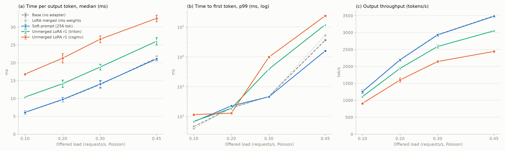
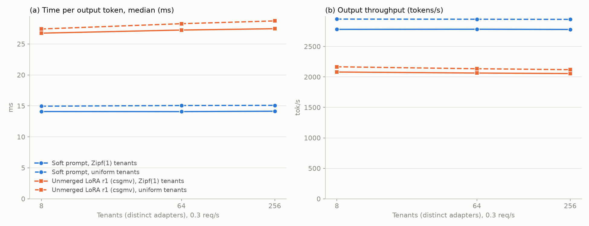
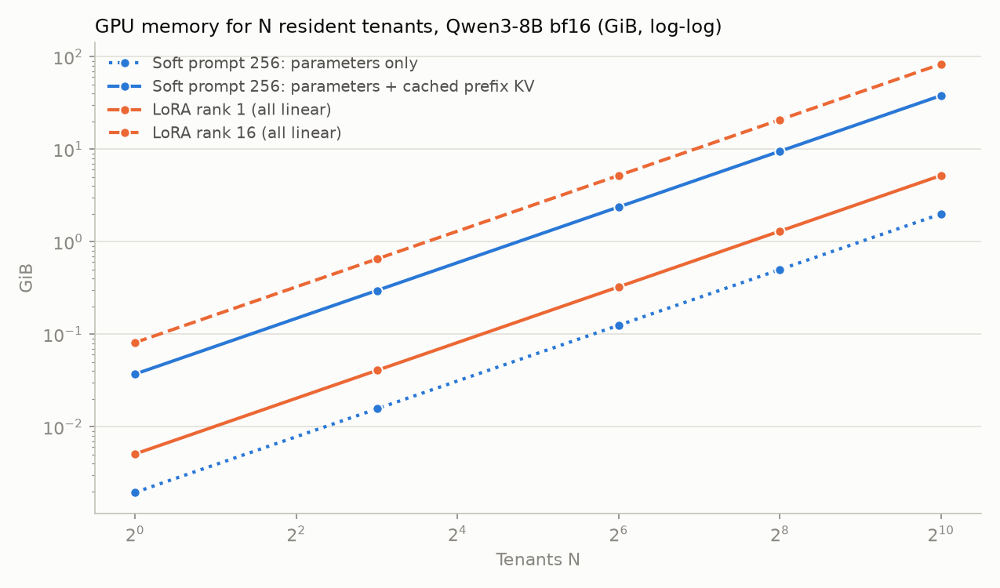

Serving Soft Prompts vs. LoRA: Infrastructure Measurements for Soft Prompt Without Regret
Summary
We compare serving a learned 256-token soft prompt (SP) against an unmerged rank-1 LoRA on the same backbone, using a quality-matched pair: both adapters are distilled from the same post-RL teacher trajectories (AReaL-boba-2-8B → Qwen3-8B, LiveCodeBench) and both recover the teacher's gain. Under length-replayed LiveCodeBench traffic (real prompts, real output-length distribution, mean 14.5K output tokens), the soft prompt decodes at the speed of the bare backbone (median time per output token 6.1 ms vs. 6.1 ms at 0.1 req/s) and reaches the same peak throughput (3,481 vs. 3,492 tokens/s, −0.3%), whereas the unmerged LoRA costs 16.8 ms per token and saturates at 2,443 tokens/s (−30.0%). The soft prompt's price is paid in prefill and KV memory (256 extra prompt positions: single-request time to first token 39 vs. 20 ms; 36 MiB of KV per cached tenant prefix), not in decoding. With 8 to 256 GPU-resident tenants both costs stay flat in the tenant count, so the single-adapter gap carries over to many adapters. With per-prompt token identities in the prefix cache, tenants share a common system prompt (prefix-cache hit rate 63.5% vs. 47.1% for LoRA). Speculative decoding keeps working with both adapters, with 1–5% shorter accepted drafts.
1 Setup
- Backbone and adapters. Qwen/Qwen3-8B (rev.
b968826). Soft prompt: 256 vectors, checkpointcode-areal8/train/update_00000100(sha2560e985b1f…). LoRA: rank 1 on q/k/v/o/gate/up/down (2.7M parameters), checkpointcode-areal8/lora/update-000164(sha256a74f1315…). Both fromnamezz/soft-prompt-interpretability-six-pairs. "Merged LoRA" is the same adapter folded into the weights (a single-tenant deployment with no adapter computation). - Engine. SGLang at
ChangyiYang/sglang-moe-fix@ccf36ca6c, which adds the multi-tenant soft-prompt implementation used here: a GPU pool of prompt embeddings, placeholder tokens replaced at prefill, and per-prompt token identities in the radix prefix cache. Default attention backend (trtllm_mha, page size 64), CUDA graphs on,--mem-fraction-static 0.85, one GPU per server. - Traffic (length replay). Prompts are the 164 LiveCodeBench v5 (2410–2502) problems rendered with the evaluation template (thinking mode). Each request's output length is the token length of a real student completion from the pair's evaluation (164 × 8 completions, 32K cap; mean 14.5K, median 13.3K output tokens); generation runs to that length (
ignore_eos), so every configuration does identical token work. Requests arrive as a Poisson process at 0.1, 0.2, 0.3, 0.45 req/s, with max(64, 600·rate) requests per point and two seeds (different request subsets, identical across configurations). Client: SGLangbench_serving(custom dataset) with a small patch to sendsoft_promptand to draw Zipf-distributed tenants. - Metrics. Time per output token (TPOT) per request, median and p99; time to first token (TTFT); output throughput. Error bars are ± one standard deviation across the two seeds. We report TPOT rather than the median inter-token gap: under load, tokens are streamed in bursts and the per-gap median collapses toward zero.
2 Single adapter: soft prompt vs. unmerged LoRA

| Configuration | 0.1 req/s | 0.2 req/s | 0.3 req/s | 0.45 req/s |
|---|---|---|---|---|
| Base (no adapter) | 6.1 ± 0.5 | 9.6 ± 0.6 | 13.9 ± 1.0 | 21.3 ± 0.6 |
| LoRA merged into weights | 6.1 ± 0.5 | 9.7 ± 0.6 | 13.9 ± 1.0 | 21.2 ± 0.6 |
| Soft prompt, 256 tokens | 6.1 ± 0.5 | 9.7 ± 0.6 | 14.0 ± 1.0 | 21.1 ± 0.5 |
| Unmerged LoRA r1 (triton) | 10.4 ± 0.1 | 14.1 ± 1.0 | 18.8 ± 0.8 | 26.0 ± 1.1 |
| Unmerged LoRA r1 (csgmv, default) | 16.8 ± 0.0 | 21.3 ± 1.3 | 26.6 ± 1.0 | 32.4 ± 0.9 |
| Configuration | 0.1 req/s | 0.2 req/s | 0.3 req/s | 0.45 req/s |
|---|---|---|---|---|
| Base (no adapter) | 1,255 ± 55 | 2,198 ± 47 | 2,939 ± 45 | 3,492 ± 39 |
| LoRA merged into weights | 1,256 ± 55 | 2,198 ± 47 | 2,938 ± 45 | 3,491 ± 40 |
| Soft prompt, 256 tokens | 1,255 ± 55 | 2,194 ± 46 | 2,931 ± 47 | 3,481 ± 37 |
| Unmerged LoRA r1 (triton) | 1,108 ± 21 | 1,942 ± 33 | 2,589 ± 46 | 3,050 ± 19 |
| Unmerged LoRA r1 (csgmv, default) | 908 ± 11 | 1,600 ± 61 | 2,145 ± 37 | 2,443 ± 24 |
| Configuration | Prompt tokens (server) | TPOT (ms) | TTFT (ms) | Output tok/s |
|---|---|---|---|---|
| Base (no adapter) | 604 | 3.78 | 19.9 | 259.1 |
| LoRA merged into weights | 604 | 3.73 | 20.4 | 262.7 |
| Soft prompt, 256 tokens | 860 | 3.80 | 39.1 | 258.2 |
| Unmerged LoRA r1 (triton) | 604 | 6.59 | 32.6 | 149.7 |
| Unmerged LoRA r1 (csgmv, default) | 604 | 12.04 | 35.6 | 82.5 |
Natural stopping
Length replay removes one deployment effect on purpose: adapters change how long the model writes. Letting the model stop on its own (32K cap, 0.2 req/s) shows it: the soft-prompted and LoRA models produce longer solutions than the backbone (17,188 and 18,445 vs. 14,298 tokens on average, consistent with the post-RL teacher's longer outputs), so end-to-end request latency grows with the adapted behavior itself, independent of serving overhead.
| Configuration | Mean output tokens | TPOT median (ms) | TTFT median (ms) | Output tok/s |
|---|---|---|---|---|
| Base (no adapter) | 14,298 | 9.9 | 40.3 | 2,108 |
| Soft prompt, 256 tokens | 17,188 | 12.7 | 71.8 | 2,245 |
| Unmerged LoRA r1 (csgmv, default) | 18,445 | 26.0 | 70.4 | 1,620 |
3 Many adapters
Each tenant is a separately named copy of the same adapter: every request selects its tenant's prompt or LoRA, and the serving cost does not depend on the adapter values. Tenants are drawn from a Zipf(1) or uniform popularity distribution; all adapters are GPU-resident (no host offload).

| Tenants | Popularity | SP TPOT (ms) | SP tok/s | SP TTFT p99 (ms) | LoRA TPOT (ms) | LoRA tok/s | LoRA TTFT p99 (ms) |
|---|---|---|---|---|---|---|---|
| 8 | Zipf(1) | 14.1 | 2,781 | 325 | 26.7 | 2,081 | 1,109 |
| 8 | uniform | 15.0 | 2,949 | 381 | 27.4 | 2,167 | 2,149 |
| 64 | Zipf(1) | 14.1 | 2,783 | 299 | 27.2 | 2,064 | 319 |
| 64 | uniform | 15.1 | 2,947 | 346 | 28.3 | 2,135 | 236 |
| 256 | Zipf(1) | 14.1 | 2,779 | 298 | 27.5 | 2,056 | 215 |
| 256 | uniform | 15.1 | 2,945 | 332 | 28.7 | 2,119 | 239 |
Shared system prompt
Requests of all 64 tenants start with the same 918-token system prompt, followed by the tenant's adapter. Because soft-prompt positions carry per-prompt token identities, the radix tree diverges only where the soft prompt starts, and the system prompt is cached once for all tenants. LoRA changes every layer's keys and values, so a cached prefix can only be reused by requests of the same adapter.
| Configuration | req/s | Prefix-cache hit rate (run) | TPOT (ms) | TTFT (ms) | Output tok/s |
|---|---|---|---|---|---|
| Soft prompt (64 tenants) | 0.15 | 63.5% | 8.7 | 42.7 | 1,687 |
| Soft prompt (64 tenants) | 0.3 | 63.5% | 14.5 | 168.6 | 2,756 |
| Unmerged LoRA r1 (64 tenants) | 0.15 | 47.1% | 20.6 | 76.0 | 1,213 |
| Unmerged LoRA r1 (64 tenants) | 0.3 | 47.1% | 28.5 | 97.4 | 2,019 |
4 Memory
A soft prompt stores 256 × 4,096 values (2 MiB in bf16). Its larger cost is the KV of its 256 positions, 144 KiB per token on Qwen3-8B (36 layers × 8 KV heads × 128 × K/V × 2 bytes): 36 MiB per tenant whose prefix is cached. That cost is paid only for tenants with cached prefixes, it is shared by all of a tenant's requests, and an evicted prefix is recomputed with a 256-token prefill. An unmerged LoRA costs its weights per resident adapter slot, independent of request count, and an evicted adapter must be reloaded from host memory before its requests can run.
| Adapter | Parameters | Static GPU memory / tenant | Extra KV | Paid |
|---|---|---|---|---|
| Soft prompt, 256 tokens | 1.0 M | 2.0 MiB | 36 MiB per cached tenant prefix | per tenant whose prefix is cached; recomputable (256-token prefill) |
| Unmerged LoRA, rank 1 | 2.7 M | 5.2 MiB | 0 | per resident adapter slot; reload from host when evicted |
| Unmerged LoRA, rank 16 | 43.6 M | 83 MiB | 0 | same |
| LoRA merged / separate checkpoint | — | 16 GiB per tenant (full copy) | 0 | one backbone per tenant |
| Server (0.85 static memory fraction) | KV-cache capacity (tokens) |
|---|---|
| Base | 1,540,672 |
| Soft-prompt pool, 64 slots × 256 (128 MiB) | 1,539,776 |
| Soft-prompt pool, 256 slots × 256 (512 MiB) | 1,537,088 |
| LoRA r1, 2 slots | 1,540,608 |
| LoRA r1, 256 slots | 1,531,072 |

5 Speculative decoding
Drafters are trained for the backbone and left unadapted. LiveCodeBench v5 (first 64 problems), thinking mode, temperature 1.0, outputs capped at 8,192 tokens, 16 concurrent requests, SGLang 0.5.21; the soft prompt is served as virtual tokens here. In a separate greedy check (3 prompts, 192 tokens), the multi-tenant implementation produced outputs and verify-step counts identical to this virtual-token reference for both EAGLE-3 and DFlash, i.e. the drafter sees identical inputs.
| Drafter | Accept len: base | + SP256 | + LoRA r1 | tok/s: base | + SP256 | + LoRA r1 |
|---|---|---|---|---|---|---|
| EAGLE-3 Tengyunw (chain 4) | 2.35 | 2.28 (−2.9%) | 2.31 (−1.5%) | 4,675 | 4,731 | 3,108 |
| EAGLE-3 AngelSlim (chain 4) | 2.03 | 2.01 (−0.8%) | 2.02 (−0.2%) | 4,182 | 4,155 | 2,719 |
| DFlash (block 16) | 2.93 | 2.83 (−3.2%) | 2.85 (−2.8%) | 2,851 | 2,835 | 2,267 |
| No speculation | — | — | — | 2,632 | 2,660 | 1,589 |
6 Long inputs
The preliminary long-context estimate in the paper (Table 6, read from plots) corresponds to the measurements below: 32K-token inputs, 1,024 output tokens, 128 Zipf tenants with GPU-resident adapters, Poisson arrivals, SGLang 0.5.21. Here the LoRA is a rank-16 adapter with random weights (serving cost only), and each tenant's soft prompt is modeled as a fixed 256-token prefix served through the prefix cache (this predates the soft-prompt pool). The paper's estimate used median inter-token gaps (~24 vs ~32 ms); we report TPOT, which stays meaningful under load.
| req/s | TPOT base | SP256 | LoRA r16 | TTFT base | SP256 | LoRA r16 | tok/s base | SP256 | LoRA r16 |
|---|---|---|---|---|---|---|---|---|---|
| 0.3 | 7.9 | 8.1 | 17.3 | 608 | 663 | 766 | 323 | 323 | 300 |
| 0.5 | 12.4 | 12.6 | 27.8 | 624 | 675 | 740 | 519 | 518 | 456 |
| 0.8 | 38.9 | 39.8 | 52.7 | 772 | 891 | 1,280 | 696 | 691 | 560 |
7 Limitations
- One backbone (Qwen3-8B), one task (LiveCodeBench), one GPU type; tensor and data parallelism are not covered.
- Two seeds per load point; multi-tenant and natural-stopping runs use one seed.
- Multi-tenant results replicate one adapter under many names; adapter values do not affect serving cost, but adapter ranks and target modules would.
- LoRA uses SGLang's kernels (csgmv by default, triton as an alternative); other engines or kernels will shift the LoRA numbers. Prefill batches containing soft-prompt positions currently run without the prefill CUDA graph.
- Sections 5–6 come from earlier runs on SGLang 0.5.21 with an 8K and 1K output cap respectively; their configurations differ from Sections 2–4.
8 Reproducibility
- Engine: ChangyiYang/sglang-moe-fix@ccf36ca6c (docs:
docs/advanced_features/soft_prompt.mdx). - Scripts, raw results and figure code for Sections 2–4: multitenant-serving-bench/paper; Section 5: …/spec; Section 6: the repository root (
run_long.sh).